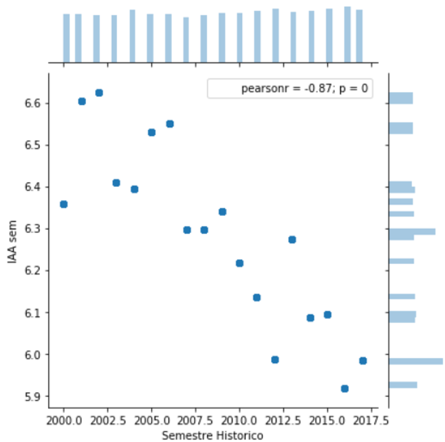

Project 3 -
Calculus Reform
Analysing students' performance in calculus
to evaluate and plan measures to improve learning
Introduction
A few years prior to this project, the engineering teaching center at the University of Santa Catarina (UFSC) gathered teachers from all of the engineering courses to take action on the rising problem of bad performance mostly among freshmen. The initial assessment was that students were getting into engineering courses without the same mathematical background as they did before, as evidenced by their poor performance in calculus. The solution was to create a pre-calculus class that students without the necessary prior knowledge would have to take. There would be a test for all students by the time they enrolled and students with a passing grade would go straight to calculus A, whereas the ones below the bar would have to take pre-calculus. This new subject had two goals: review basic math needed to get to calculus; tutor these students closely to help them learn how to study properly.
An even steeper decline is shown by the calculus A grades, even after the implementation of the pre-calculus program.
For the pre-calculus subject the sample size is much smaller so the trend isn’t fully clear. But taking it into account, it does seem to show a decline and mainly a low grade.
So at first, the effectiveness of the adopted strategy didn’t seem to work and it reflected not only in these superficial overall grade visualizations but also in other indicators such as dividing performance between students who went through straight to calculus A or the ones who took pre-calculus.
ML Approach
The segregated analysis suggested there are some clear distinctions between some students, so what followed was a clustering of the students. By clustering students what was found was that students who have really high overall grades are practically the only group that excels in both calculus A and calculus B, for instance. The same pattern appeared in the other calculus subjects. The 2 lower clusters seem to have mostly passing grades in one of the subjects but overall have bad results and frequently fail calculus.
On a second approach, a decision tree model was made to predict whether students would pass or fail the calculus subjects. What the feature importance graph showed was that the main drivers to determine whether a student would pass or fail these specific subjects were their score in the exam to get into university (“vestibular”), the teachers’ average student grade and the time the student was taking the subject (first, second or third try).
Conclusion
There are some notes to be taken after the analysis:
- The pre-calculus course didn’t achieve the expected results. The reasons were traced back to its implementation which was decentralized and didn’t follow the appropriate method.
- The entry exam seemed to show that students were probably less prepared for the course than the ones if prior years.
- Students who failed once tended to fail another time
- Teachers were using different standards or had varying teaching abilities.
In so, a new set of actions were designed to improve these problems:
- The mathematics department allotted resources, that is teachers and tutors, to recreate the pre-calculus program so that it could live up to its purposes in a more consistent method.
- Some courses elevated the minimum math grade in the entry exam from 2 to 3, expecting to filter students with a better math background
- The student coordinator of each course would pay closer attention to students failing calculus to support their learning.
- There would be a new group that could foment activities among teachers to share best practices. The goal was to spread best practices and standardize the teaching method and evaluation.
- The calculus subjects were shared between all engineering courses. One of the propositions was for calculus to be integrated in the curriculum of each course in a way that it would be tailored to the course’s needs. The computer science course agreed to conduct an experiment to see if it would work and if the practice should be undertaken for the whole center.